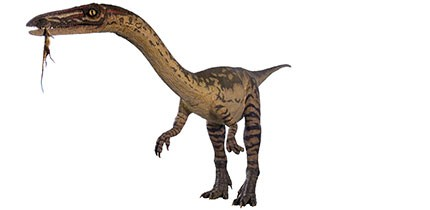

|  |
|
In the Late Triassic Period dinosaurs were not at the top of the food chain. Instead, early large reptiles called phytosaurs and rauisuchids domintated. Early meat-eating dinosaurs like Coelophysis relied on their speed and agility to catch a variety of animals like insects and small reptiles. The sharp teeth and grasping claws of Coelophysis would have helped them to hold and kill their food.
A fossil find of an adult skeleton with what appeared to be young Coelophysis bones inside its rib cage led scientists to speculate that Coelophysis ate each other when the opportunity arose. Recent analysis has disproved this, however, by showing that the bones inside the ribcage are not a baby Coelophysis after all, but belong to a small crocodile.
Coelophysis means 'hollow form' and this comes from the hollow limb bones. This feature was shared by many other dinosaurs, and would have given Coelophysis a lightly-built body, helping it to be a swift, agile hunter.